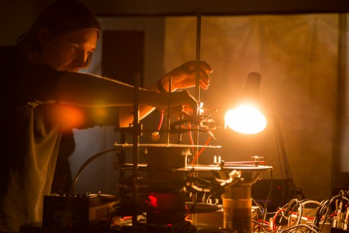

Happy 10th birthday Flatpack!

It’s hard to believe that Flatpack Film Festival is ten. Spawned from short film nights at the Rainbow in Digbeth, the festival now takes over the city with screenings, performances, installations and happenings every year. This year’s festival kicks off slightly later than usual (19-24 April) and is a little shorter than previous editions. However, … [Read more…]